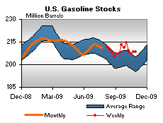

Released on November 4, 2009
(Next Release on November 12, 2009)
Proved Reserves of Crude Oil Fall in 2008, Reflecting Low End-of-Year Prices
The Energy Information Administration’s (EIA) U.S. Crude Oil, Natural Gas, and Natural Gas Liquids Proved Reserves, 2008 reports that proved reserves of crude oil fell by more than 10 percent in 2008, primarily because of low end-of-year prices used to estimate proved reserves, even though discoveries of crude oil rose for the third year in a row. In contrast, proved reserves of natural gas rose by 3 percent in 2008, despite low end-of-year prices.
Proved reserves are those volumes that geological and engineering data demonstrate with reasonable certainty to be recoverable from known reservoirs under existing economic and operating conditions. Under Securities and Exchange Commission (SEC) rules in effect since 1982, operators assessed their 2008 proved reserves based on the market price on the last day of the year.
Crude Oil. The end-of-year crude oil price for 2008 - $44.60 per barrel for West Texas Intermediate (WTI) crude oil - was less than half the end-of-year price for 2007 - $95.95 per barrel. As a result, operators reported record negative net revisions of more than 2 billion barrels to their proved reserves estimates, more than they produced during the year.
Under updated SEC rules issued in 2008 that take effect in 2010, operators will instead use an annual average of first-day-of-the-month prices to develop their reserves estimates. This average price will be less sensitive to volatility in prices. The SEC's new rules would have shown an increase in oil prices from $71.79 per barrel in 2007 to $101.63 per barrel in 2008, a 42 percent price increase rather than the significant decline operators actually used. Under the new rules, there would likely have been a smaller drop (or possibly even an increase) in crude oil proved reserves.
Despite the record negative revisions to proved crude oil reserves, 2008 saw a drilling boom in the first half of the year and an increase in new discoveries of crude oil for the year. One notable source of increased discoveries was North Dakota (167 million barrels), representing rapid proved reserves growth in the Bakken shale and the underlying Three Forks formation. Operators can produce oil from the Bakken using the same horizontal drilling and hydraulic fracturing techniques used so widely for natural gas shale production. (Note, however, that the production of oil from the layers of shale like those in the Bakken Formation is not the same as the extraction of oil from oil shale plays. See This Week In Petroleum, March 4, 2009.)
Natural Gas. Proved reserves of natural gas rose by 3 percent in 2008, despite relatively weak year-end prices. This followed a 13 percent increase in 2007. Proved reserves stood at 245 trillion cubic feet (Tcf) at the end of 2008, the highest level in the 32 years that EIA has collected these data. In both years, growth in proved reserves was due largely to continued development of unconventional natural gas from shales.
Total discoveries amounted to 29.5 Tcf, more than enough to offset both production and negative net revisions that arose largely from low year-end prices. Most discoveries were reported as “extensions.” This reflects the fact that the bulk of proved reserves additions occur after the initial discovery of a field or reservoir, as further exploration extends the original boundary.
U.S. Average Gasoline and Diesel Prices Move Up
The U.S. average retail price for regular gasoline gained 2 cents this week to reach $2.694 per gallon, the highest level this year. This surpassed the previous 2009 weekly high of $2.691 per gallon seen on June 22. The national average is now $0.29 per gallon higher than it was a year ago. Prices increased in all regions of the country. In the Rocky Mountains, the average increased three cents to $2.61 per gallon. The price rose roughly two cents in each of the other major regions, from one and a half cents in the Midwest and Gulf Coast to a bit over two cents in the East Coast and the West Coast. Prices ranged from a low of $2.56 in the Gulf Coast to a high of $2.91 in the West Coast. The average in California was essentially unchanged at $2.99 per gallon.
The national average price of diesel fuel inched up about a penny to $2.81 per gallon. Despite a cumulative increase over the past four weeks of $0.23 per gallon, the average remains $0.28 per gallon below a year ago. Prices increased in most regions of the country. The average on the East Coast went up about two cents to $2.83 per gallon. The Gulf Coast and West Coast prices edged up about a penny to $2.75 and $2.91 per gallon, respectively. In California, the average rose about a penny to $2.97 per gallon. The Rocky Mountains experienced the largest increase, moving up more than three cents to $2.81 per gallon. At $2.79 per gallon, the price in the Midwest was essentially unchanged, slipping less than half a cent.
Propane Inventories Continue Decline
Propane stocks continued to draw throughout most of the U.S. last week, falling by 1.4 million barrels to approximately 69.6 million barrels. The largest regional decline of 0.9 million barrels occurred in the Midwest, reflecting crop-drying demand. The Gulf Coast region drew 0.5 million barrels and the East Coast regional stocks fell by 0.1 million barrels. The Rocky Mountain/West Coast region grew slightly. Propylene non-fuel use inventories slightly increased their share of total propane/propylene inventories from 3.3 percent to 3.4 percent.
Residential Heating Fuel Prices Increase
Residential heating oil prices increased slightly during the period ending November 2, 2009. The average residential heating oil price rose 1.2 cents per gallon last week to reach 273.4 cents per gallon, a decrease of 25.3 cents per gallon from the same time last year. Wholesale heating oil prices dropped 7.3 cents per gallon to reach 207.6 cents per gallon, which was 7.4 cents per gallon lower than last year at this time.
The average residential propane price rose 2.8 cents per gallon to reach 218.5 cents per gallon. This was a decrease of 31.5 cents per gallon compared to the 250.0 cents per gallon average from the same period last year. Wholesale propane prices fell 2.1 cents per gallon, from 118.5 cents per gallon to 116.4 cents per gallon. This was an increase of 9.6 cents per gallon when compared to the November 3, 2008 price of 106.8 cents per gallon.
Text from the previous editions of “This Week In Petroleum” is now accessible through a link at the top right-hand corner of this page.
| Retail Prices (Cents Per Gallon) | |||||||
| Retail Data | Changes From | Retail Data | Changes From | ||||
| 11/02/09 | Week | Year | 11/02/09 | Week | Year | ||
| Gasoline | 269.4 | Heating Oil | 273.4 | ||||
| Diesel Fuel | 280.8 | Propane | 218.5 | ||||
| Spot Prices (Cents Per Gallon*) | |||||||||||||||||||||||||||||||||||
|
|||||||||||||||||||||||||||||||||||
| *Note: Crude Oil WTI Price in Dollars per Barrel. | |||||||||||||||||||||||||||||||||||
| Stocks (Million Barrels) | |||||||
|  | |||||||
| Stocks Data | Changes From | Stocks Data | Changes From | ||||
| 10/30/09 | Week | Year | 10/30/09 | Week | Year | ||
| Crude Oil | 335.9 | Distillate | 167.4 | ||||
| Gasoline | 208.3 | Propane | 69.632 | ||||